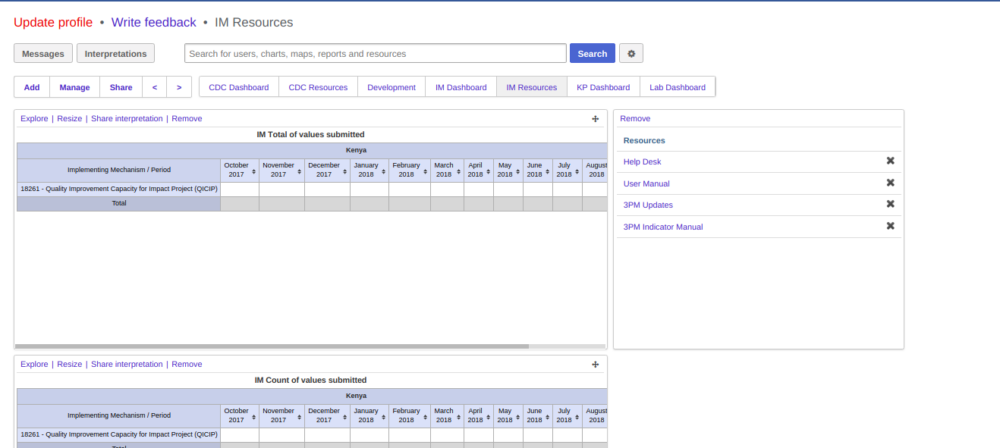

Getting Started with 3PM¶
System Access¶
The system can be accessed at IP address https://45.79.150.72.
Note
The IP address is just a placeholder, it will soon be replaced with a domain name.
Logging in¶
You are required to provide your username and password in order to access the system. The figure below is a screenshot of the start page/login page;

Figure 1: Login page
Landing page¶
Once logged in, the user can see their dashboard because this is the default landing page. The dashboard is customisable to fit your own preferences in terms of the reports/charts you would love to see as default.

Figure 2: Landing page
Note
More about dashboard is discussed under the Reports section.